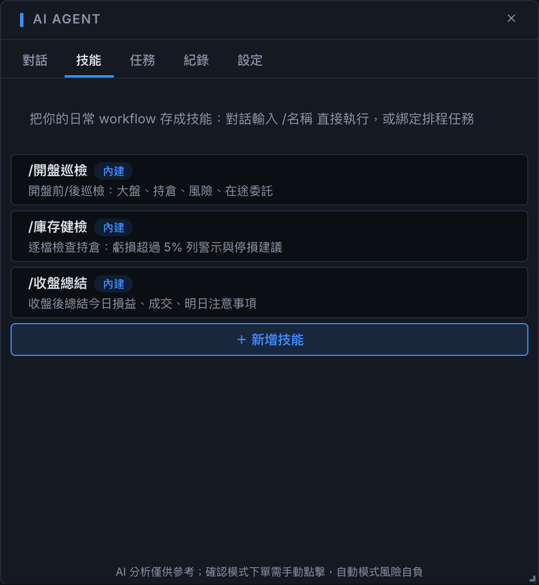
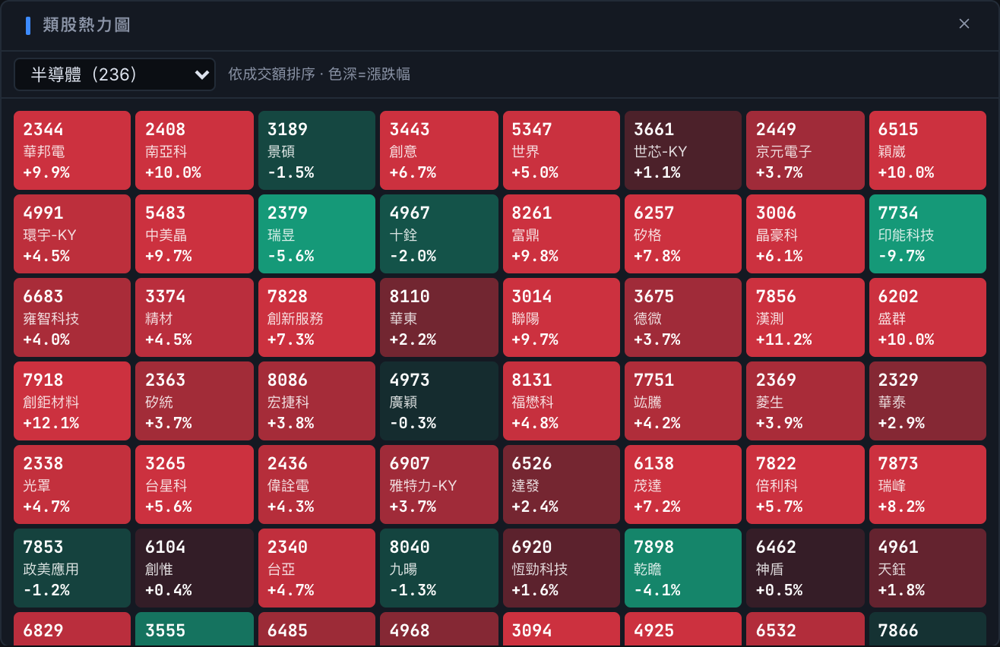
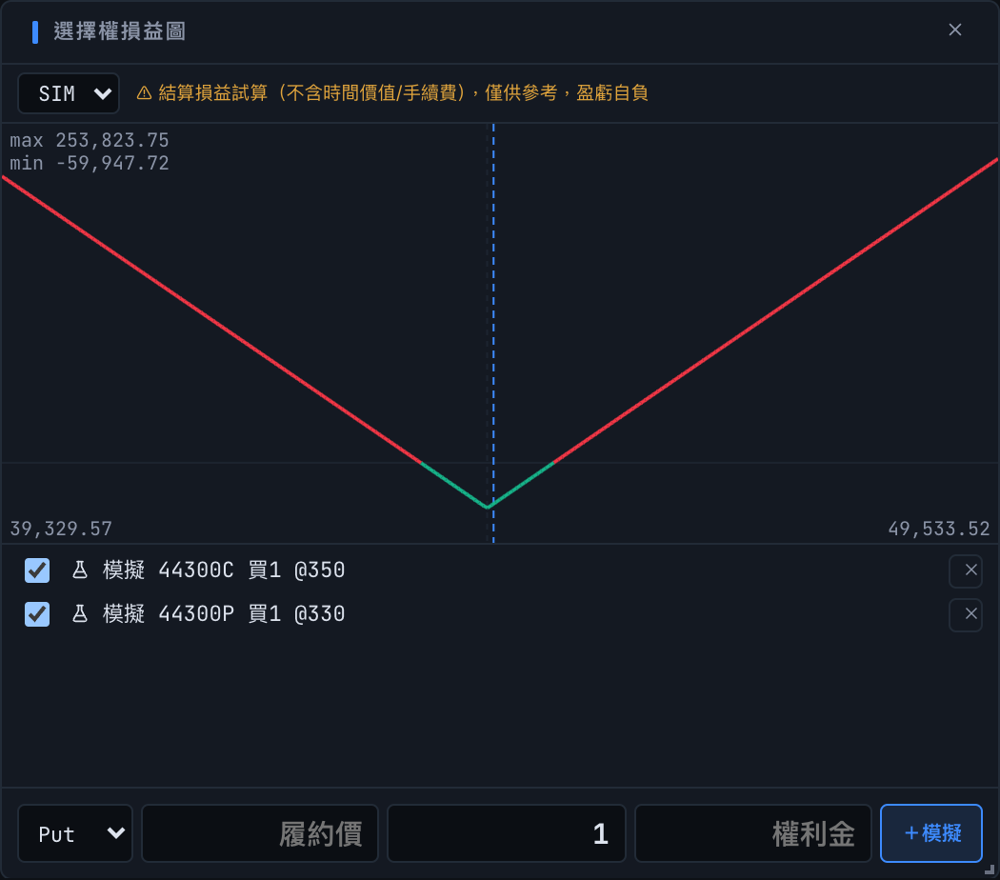

這個終端從第一行程式碼到簽章上架，全程由 coding agent 完成。 上一版，我們說「為 agent 交易鋪路」— 這一版，agent 直接住了進來： 接上 Claude、OpenAI，或拿你現成的 Codex 訂閱就能用。 問行情、巡庫存、把日常流程存成技能、排程到價自動出手 — 下單永遠由你授權。 預設模擬環境，下載即玩，分文不取。
下載即用・macOS 已簽章公證・內建自動更新・模擬環境安全試玩
Built-in AI Agent
不是聊天機器人 — 它接著行情、持倉、帳務與下單工具，像 Claude Code 之於程式碼，這個 agent 之於你的交易日常

Skills・Procedural Memory
內建 shioaji 市場知識與 開盤巡檢／庫存健檢／收盤總結 三個起手技能。 你常做的流程教它一次，它會自己存成技能（Hermes 式程序記憶），下次輸入 /名稱 直接執行，越用越懂你。
已經在用 Codex CLI？登入直接共用，額度算在你的 ChatGPT 訂閱裡。
Execution
股票、期貨、選擇權 — 每一種下單方式都為速度與容錯而生

Flash Order
價格梯自動跟隨現價、永不丟失行情，漲跌停就是捲動邊界。 點買賣量即下限價單、在途委託點擊即刪、今日成交直接標在實際價位上。

Grid Orders
設定檔距、檔數、間隔、每檔量，一鍵鋪出整排限價單。 開啟動態跟隨後價格移動會自動撤舊補新，永遠維持與現價的相對距離 — 速率限制與重複下單防護都想好了。
Market View
從大盤熱力到單一選擇權部位的損益曲線，全部即時

Sector Heatmap
整個類股攤成一張熱力圖，色深就是漲跌幅、排序就是成交額。 點任何一格直接連動全終端 — 圖表、五檔、下單面板瞬間切換到那檔股票。

Options
選擇權持倉自動畫出結算損益曲線，最大獲利／最大虧損／損益兩平直接標出。 進場前先加模擬部位，跨式、勒式、價差先畫再下。
Desktop Native
免裝 Python、免開終端機 — 安裝完就是一個完整的交易環境
HTTP API 伺服器以 sidecar 內建，自動啟動、健康監控、斷線重連重訂閱；port 被占用會自己找新家。
介面直接載入 CA 憑證（.pfx 檔案挑選器），模擬／正式一鍵切換 — 預設永遠是安全的模擬環境。
Menu bar 一點就有迷你看盤：損益、自選、指數 — 顯示什麼由你自訂，不開主視窗也能盯。
成交、委託、錯誤分色卡片，乾淨格式化不丟原始事件；大小可調、有通知中心可回看、提示音分情境。
GitHub Actions 自動建置簽章，macOS 公證完成；新版本到了 App 自己告訴你，一鍵升級。
一鍵遮蔽所有金額（旁邊有人也能開盤）；深色／純黑／淺色主題、紅漲綠跌可切、字級四段可調。
Open Source
UI、SSE 串流、下單鏈路、Tauri 打包、簽章公證、CI 發佈，沒有一行人手寫的程式碼。這不是概念展示，是一個真的能交易的終端
Fork 之後對 agent 開口就好：加一個面板、改閃電下單的行為、接上你的策略訊號 — 地基已經打完。
斷線重連重放訂閱、tick／五檔 store、觸價引擎、OCO、風控閘道、agent 工具鏈 — 即時交易系統的坑都處理給你看。
React 19 + TypeScript + Vite、vanilla-extract、lightweight-charts、Tauri 2 — fork 它、拆它、只抄你要的那段都歡迎。
兩行指令，你自己的 coding agent 也能踏進台股 — 然後開口描述你要的工具：
「幫我用 shioaji 做一個 ___」 — 剩下的交給 agent
Quickstart
預設連線模擬環境，安全試用所有功能 — 含 AI Agent
下載對應平台安裝檔。macOS 已完成 Apple 簽章與公證，開啟即用。
於 永豐金證券 申請 API Key，在伺服器管理介面填入 API_KEY 與 SECRET_KEY。
內建 shioaji server 自動啟動，預設模擬環境。想開 AI Agent？設定頁選個 provider 就能對話。